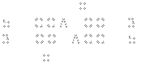

Methyltransferases add methyl groups to a DNA. They most commonly add the methyl group to either N6 of adenine or C5 of cytosine.
Section divider: Methyltransferases, with structures of N6-methyladenine and C5-methylcytosine.
Type II Restriction Systems
All type II restriction enzymes have cognate methyltransferases
BamHI methyltransferase hits the N4 position
DNA methylated by these methyltransferases is impervious to digestion by the cognate endonuclease

The type II restriction enzymes have cognate methyltransferases. They are used in the native context to protect the genome from the action of the restriction enzyme and thus typically have the same specificity as the restriction enzyme. For example, BamHI methyltransferase modifies the fourth C in the BamHI restriction site. Upon methylation, the activity of the cognate endonuclease is blocked at that site.
Every type II restriction enzyme has a partner methyltransferase that protects the host genome by methylating the same sequence.
Dam and Dcm Methylation
E. coli K12 lab strains encode 2 methyltransferases, dam and dcm
They recognize and methylate Dam (GmATC) and Dcm (CmCWGG)
Restriction sites overlapping these sites are sometimes blocked
Strains like JM110 have dam and dcm knocked out, but they aren’t healthy bacteria
These relationships are documented in the NEB catalog
Methylated Dam sites are the substrate of DpnI endonuclease
Example: Dam blocking of XbaI digestion
Me
5’-TCTAGATC-3’
3’-AGATCTAG-5’
Me
Dam and Dcm methylation frequently block restriction endonucleases. The lab strains of E. coli encode these two methyltransferases which modify the sequence GATC and CCWGG, where W is either A or T. When a restriction site overlaps these sites, the enzyme will be blocked. There are some useful strains like JM110 that have these genes knocked out, but these genes also play regulatory roles in the cell and the bacteria aren’t healthy. Whether an enzyme can be blocked by Dam or Dcm methylation is cataloged by NEB. One of the more common ones is XbaI. If the restriction site is followed by the sequence TC, it will overlap a Dam site and thus be methylated and blocked.
Dam and Dcm methylation in lab E. coli strains, with a worked example showing an XbaI site followed by TC creating an overlapping Dam site that blocks the enzyme.